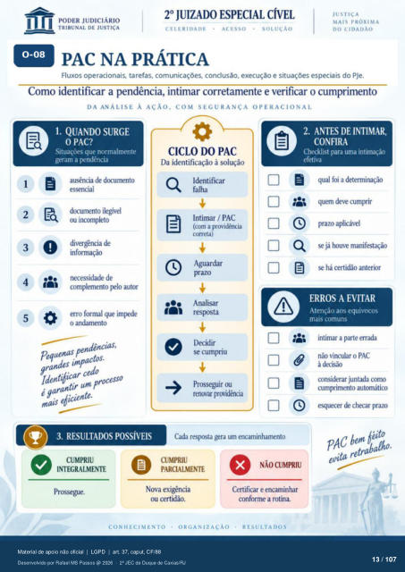

Transcrição automática em português, ainda não revisada. Confira grafia, prazos e termos jurídicos na imagem e no PDF antes de utilizar.
1
CEI.ERIDADE
PAC NA PRÁTICA
Fluxos operacionais, tarefas, comunicações. conclusão, execução e situações especiais do PJe. Como identificar a pendência, intimar corretamente e verificar o cumprimento
DA ANÁLISE À AÇÃO. COM SEGURANÇA OPERACIONAL
1. QUANDO SURGE
O PAC?
Situações que normalmente geram a pendência
2 3
4 5
O ausência de dcwumento
ou incompleto divergência de
necessidade de complemento FIO autcr
erro formal que iml*de o andamento
pequenas. pendênccas, gratules ¯cefos
processo engais eficiente.
CICLO DO PAC
Da identificação à solução Identificar
Intimar / PAC .com a providência
CMreta) prazo
Analisar respsta
Decidir se cumpriu
Proseguir ou rerovar providência
2. ANTES DE INTIMAR,
CONFIRA
Checklist para uma intimação efetiva
qual foi a determinação quem deve cumprir
prazo aplicável Q
se já houve manifestação há certidão anterior
ERROS A EVITAR
Atenção aos equívocos mas comuns
intimar a prte errada não vincular o PAC
à decisão considerar juntada como
cumprimento automátiCX) esquecer de checar prazo
3. RESULTADOS POSSÍVEIS
Cada resp:Ña gera um encaminhamento
CUMPRIU
INTEGRALMENTE
PAC evita re
CUMPRIU
PARCIALMENTE
Nova exigência ou certidão.
CONHECIMENTO ORGANIZAÇÃO
NÃO CUMPRIU
Certificar e encaminhar ccnforme a rotina.
RESULTADOS
Ver também o infográfico original (página 13)
